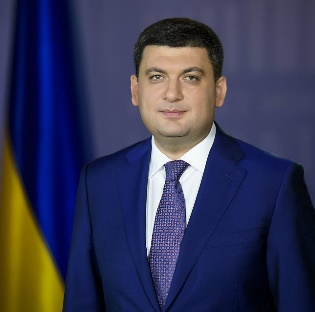

Digital Government Factsheet 2019
Ukraine
ISA2
Table of Contents
Digital Government Political Communications 7
Digital Government Legislation 10
Digital Government Governance 14
Digital Government Infrastructure 17
Digital Government Services for Citizens 22
Digital Government Services for Businesses 26
Country Profile
Basic data
Population: 42 122 657 (2019)
GDP at market prices: UAH 1 048 023 (2019)
GDP per inhabitant in PPS (Purchasing Power Standard EU 28=100):
GDP growth rate: 3.4% (IV quarter of 2018 compared to IV quarter of 2017)
Inflation rate: 9.8%* (2018)
General government gross debt (Percentage of GDP): 63%*
General government deficit/surplus (Percentage of GDP): 1.66%*
Area: 603 628 km2
Capital city: Kyiv
Official EU language: Ukrainian
Currency: UAH
Source: UkrStat (last update: 15 March 2019), *Ukrainian Ministry of Finance
Digital Government Indicators
At the present moment the Digital Economy and Society Index (DESI) does not collect data for Ukraine.
However, according to the report Digital 2019 Ukraine:
- 93% of Ukrainian citizens use the internet.
- 71% of population uses the mobile internet.
- 72% use the Internet every day.
- 21% use the Internet at least once per week.
- 4% use the Internet at least once per month.
- 2% use the Internet less than once per month.
Digital Government State of Play
This section of the factsheet is meant to presents the country performance on the main eGovernment indicators according to the latest eGovernment Benchmark report, which monitors the development of eGovernment in Europe.
At the present moment the report does not analyse the state of play of eGovernment in Ukraine.
Digital Government Highlights
Digital Government Political Communications
- On 30 January 2019, the Cabinet of Ministers of Ukraine adopted the Action Plan for the implementation of eServices development concept for years 2019 - 2020. The document determines activities aim at improving the quality of administrative services delivery for citizens and businesses in compliance with European requirements.
- On 17 January 2018, the Cabinet of Ministers of Ukraine adopted the Concept of digital economy and society development and action plan for its implementation for years 2018 - 2020. The document’s objective is implementation of Digital Agenda of Ukraine initiative for digital transformation of Ukraine in the most perspective areas.
Digital Government Legislation On 7 November 2018, the law of Ukraine On Trust Electronic Services came into force. The document implements the key principles of the eIDAS Regulation in Ukraine. The Law establishes the identification tools such as electronic digital signature, Mobile ID, electronic stamp, electronic timestamp. The Law increases the number of eServices that the citizen can obtain online. Digital Government Governance
Established in 2014, the Ukrainian State Agency for eGovernance is the main body responsible for the policy formulation and implementation in the sphere of digital government and information society creation.
Digital Government Infrastructure
In 2018 the Ukrainian government finalised and launched the National Interaction system TREMBITA. The system, which is based on the Estonian interaction system X-Road, aims at data exchange between the state information resources to ensure the high level of eServices delivery system. In 2018, TREMBITA received certification of its data protection mechanisms in compliance with the legislatively mandated requirements for technical and cryptographic data protection. Currently, the experts are developing comprehensive data protection system for its central part. The owner of the system is the State Agency for eGovernance of Ukraine. This interaction system guarantees state authorities and service centres access to the information contained in national registers and thereby will enable fast and high-quality provision of public services.
Digital Government Services for Citizens and Businesses
In year 2018, the State Agency for eGovernance developed and launched the State Registry of Registries (RoR). This is the information system designed for registration, accumulation, processing, analysis and storage of information about state registries and information systems in Ukraine. The RoR contains data about the composition, content, location and conditions to access to these electronic information resources. The creation of RoR will significantly ease the delivery of digital public services to citizens and businesses to Ukraine.
Digital Government Political Communications
Specific political communications on digital government
Digital Agenda for Ukraine
During year 2018, the Cabinet of Ministers of Ukraine and the State Agency for eGovernance of Ukraine were the key actors laying the groundwork for the publication of a new Digital Agenda for Ukraine. For Ukraine, eGovernance is one of the main policy directions of its current Government. Digital Agenda for Ukraine was adopted on January 17, 2018. It is the main strategic document laying down the directions of Ukraine’s government’s and economy’s development. outlines the principles of Ukraine’s development in the digital space and the basis for the development of the digital economy.
The Digital Agenda for Ukraine consists of seven main pillars:
- Telecommunications and ICT Infrastructure;
- Digital Skills;
- eMarket;
- Digital Governance;
- Innovation and R&D;
- Trust and Cybersecurity;
- Benefits from ICT for Society and Economy.
The Digital Governance pillar lays down actions that would help to modernise Ukraine’s public administration. Amongst them are developing an architecture of ministries functions; putting together data, application, technology, information security architectures, laying down common business processes, introducing unified document templates and standard solutions.
You can read more about the Digital Agenda for Ukraine in English here.
Concept of digital economy and society development
On January 17, 2018, the Cabinet of Ministers of Ukraine adopted the Concept of digital economy and society development and action plan for its implementation for years 2018 - 2020. The document’s objective is implementation of Digital Agenda of Ukraine initiative for digital transformation of Ukraine in the most perspective areas. The implementation of such a concept ensures the driving of economy and investment promotion, the transformation of domestic industry into competitive one via digitization means, providing the citizens with digital technologies, creating new opportunities for human capital, developing innovative, creative and digital businesses. The Concept itself determines the principles of digitization and digital development directions as well as declares the harmonisation with digital initiatives such as Digital Agenda for Europe and Digital Single Market.
Action Plan for the implementation of eServices development for years 2019 - 2020
On January 30, 2019, the Cabinet of Ministers of Ukraine adopted the Action Plan for the implementation of eServices development concept for years 2019 - 2020. The document details the actions that aim at improving the quality of administrative services delivery for citizens and businesses. All the actions of the action are in compliance with European requirements.
Among the main priorities of the action plan are:
- Improving the public-sector efficiency based on the principles of effectiveness, efficiency, transparency, accessibility and accountability;
- Ensuring mobility and competitiveness of citizens and business in modern economic environment;
- Eliminating possible corruption risks during the administrative services provision; improving the investment promotion, business environment and competitiveness of the country;
- Driving the development of information society in Ukraine.
Action Plan for the implementation of eGovernment development concept for the years 2018-2020
On August 22, 2018, the Cabinet of Ministers of Ukraine adopted the Action Plan for the implementation of eGovernment development concept for the years 2018-2020. The document lays down concrete activities that are to be undertaken by the state entities to ensure the development of eGovernance in Ukraine until the year 2020.
The action plan is focused on three key directions:
- Modernisation of eServices and development of electronic interaction between state entities, citizens and businesses;
- Modernisation of the public administration via the means of information technologies;
- Management of eGovernment development. The implementation of such an action plan allows to improve public sector efficiency, to improve the eServices delivery system, and to increase the investment promotion and business environment in the country.
Key enablers
Access to public information
Action Plan on Open Government Partnership initiative implementation for years 2018-2020
On 18 December, 2018, the Cabinet of Ministers of Ukraine adopted the Action Plan on Open Government Partnership initiative implementation for years 2018-2020. As a response to the request of civil society to state entities to become more transparent, open and accountable, the Cabinet of Ministers of Ukraine adopted a detailed plan on how to implement the Open Government Partnership.
The document provides detailed implementing activities such as adopting of best international standards of open information to ensure the transparency of construction activities (CoST) on the basis of Infrastructure Ministry, enhancing transparency and efficiency of state control in the sphere of public procurement, implementing of verification mechanisms on information about end beneficiaries etc.
Action plan on the implementation of the International Open Data Charter Principles
On 21 November 2018, the Cabinet of Ministers of Ukraine approved Action plan on the implementation of the International Open Data Charter Principles. Ukraine joined the International Open Data Charted in year 2016 and committed to implement all the Charter principles, especially the principle of open by default by opening the government data. The action plan ensures the efficient development of open data in Ukraine, citizens’ rights for access to information, transparency and openness of state entities, and driving the innovations.
eID and Trust Services
No political communication was adopted in this field to date.
Security aspects related to digital government
Action plan on implementation of cybersecurity strategy in Ukraine
On 11 July 2018, the Cabinet of Ministers of Ukraine approved the Action plan on implementation of cybersecurity strategy in Ukraine. The document determines 18 activities on the following directions: ensuring the legislative framework in the sphere of cyber security; development of technological component of the national cyber security system; establishing relations with international partners of Ukraine; establishing the process of personnel training on cyber security.
Interconnection of base registries
Mapping Report ‘State Electronic Information Resources. Status and Perspectives’
In order to present the state of play of public electronic registries, State Agency for eGovernance developed ta Mapping Report ‘State Electronic Information Resources. Status and Perspectives’. According to the report, there are more than 135 state information resources (registries) owned by more than 40 state authorities in Ukraine. Per the calculations based on the 23 analysed registries, the state spends an average of UAH 21 million (approximately EUR 713 000) per year on the maintenance of each registry. The report stressed the problem with interconnection of base registries and lack of proper identifiers (low level of distribution of the digital ID numbers among citizens and lack of the identifier in existing state registers). Moreover, the report includes a list of recommendations on how to improve the following state of play.
eProcurement
No political communication was adopted in this field to date.
Domain-specific political communications
No political communication was adopted in this field to date.
Interoperability
No political communication was adopted in this field to date.
Emerging technologies
Ukrainian Artificial Intelligence Strategy
As part of priority actions for 2019, the Cabinet of Ministers of Ukraine delegated to the State Agency for eGovernance the task of developing the Ukrainian Artificial Intelligence Strategy based on the approach European Commission is taking for AI and coordination plan for Artificial Intelligence ‘made in Europe’.
Digital Government Legislation
Specific legislation on digital government
Decree no. 56 Some Questions of Digital Development
On 30 January 2019, the Cabinet of the Ministers approved the Decree Some Questions of Digital Development defining the digital by default principle. The decree emphasizes the key principle of the digital development - digital by default, and other principles, such as mobile-first principle, and necessity of eParticipation, digital inclusion and engagement. The implementation of the digital by default policy will model the joint approach for the access to services via the Internet, free of charge integration, management of the electronic information resources, administration of security questions and data protection. Thus, the state entities, could save the time, reduce the spending for services delivery, increase the transparency and quality of services provided to the citizens and businesses.
Key enablers
Access to public information
Law of Ukraine On Access to Public Information
The law was adopted by Verkhovna Rada of Ukraine (Ukrainian parliament) in 2011 with the last amendments being made in 2015. The law determines the citizens’ rights for access to public information held by the state authorities and other owners, as stated in the law.
The law contains important and progressive statements on the obligatory disclosure of information by the central and local state authorities. The law ensures the implementation of the international principle of the access to public information according to which all the information stored by state authorities should be open with the exception for the information access to which is prohibited by the law. The law specifies the cases of the limited access to the information subject to the base international and European standards in the sphere of access to public information, namely, the practices of the European Court of Human Rights, the UNECE Convention on Access to Information, Public Participation in Decision-making and Access to Justice in Environmental Matters, Recommendations of the Council of Europe No. R(81)19 on the access to the public information stored by the state authorities, Council of Europe Convention on Access to Official Documents.
eID and Trust Services
Law on Electronic Trust Services
On 7 November 2018, the law of Ukraine On Electronic Trust Services came into force. The document implements the key principles of the eIDAS Regulation in Ukraine. The law establishes the identification tools such as electronic digital signature, Mobile ID, electronic stamp, electronic timestamp.
The Law increases the number of eServices that the citizens can obtain online. The law also ensures the privacy and complete protection of personal data. Subject to the law, the electronic identification certificates will be mutually acknowledged between the EU countries and Ukraine.
Procedure of compliance assessment in the sphere of trust electronic services
Together with the law On Trust Electronic Services, the Cabinet of Ministers of Ukraine approved a decree on the Procedure of compliance assessment in the sphere of trust electronic services on 18 December 2018. The document establishes the procedure of compliance assessment to the authorised trust eServices providers. Also, the decree determines the procedure of interaction between the legal entities, the private entrepreneurs intending to provide the qualified trust eServices, the authorized trust eServices providers and entities responsible for compliance assessment to receive the documents on compliance.
Procedure of use of trust electronic services by state and local authorities, and by state-owned enterprises
On 19 September 2018 the Cabinet of Ministers of Ukraine approved the Procedure of use of trust electronic services by state and local authorities, and by state-owned enterprises. The document is developed in compliance with the law of Ukraine On Trust Electronic Services.
The implementation of this decree will assure the development of the trust eServices sphere and electronic documents flow. Also, the document established the validity of open key certificate at the moment of its overlapping. The decree strengthens the activities to increase the control on validity of identification process and to prevent the possible discretion of personal keys. In general, the decree increases the trust to the electronic documents verified by the qualified electronic signature of the state entity.
Order on requirements to the electronic identification tools and their use in eGovernance
On 27 November 2018 the State Agency for eGovernance of Ukraine issued the Order no. 86 On requirements to the electronic identification tools and their use in eGovernance. The order established the organizational, methodological, and technical conditions of use of electronic identification tools in the sphere of eGovernance.
Security aspects related to digital government
Law on basic principles of cybersecurity in Ukraine
On 8 July 2018, the law On basic principles of cybersecurity in Ukraine came into force. The law determines the basis of protection of national interests of Ukraine in the cyberspace, and the key objectives, directions and principles of state policy in the sphere of cybersecurity as well as powers of state entities and main principles of their coordination. Furthermore, the law anticipates the development of the State cybersecurity system and computer emergency response team CERT-UA. This law launched the process of complex regulation of cybersecurity as a separate sphere. It determined the legislative framework of definitions dealing with cybersecurity, cyber-attack and cyber protection. The document expanded the provisions of cyber security strategy adopted in year 2016.
Interconnection of base registries
Law on Public Electronic Registries
The draft law On Public Electronic Registries was registered in Verkhovha Rada of Ukraine for voting. The document's objective is to ensure the single interoperable system of public electronic registries. The draft law determines the institutional structure of public electronic registries and the standards of their development, maintenance, interoperability, administration, modernisation, and reorganisation. The document sets the standards of the development of registries’ information and it use in other information systems. The draft law establishes the basic registries list and a common legislative terminology for all state registries. It declares the implementation of business model for the commerce needs and registries self-efficiency. Furthermore, the document obliges to use TREMBITA interoperability system for all the interactions between the state registries. The draft law ensures the prevention from data duplication in existing basic registries and forbids for public authorities to request data from citizens that already exists in the registries. Finally, the document ensures the right for every citizen to have free access to the information from the registries about themselves. According to the draft law, the state registries should be registered in the Registry of Registries.
eProcurement
Law of Ukraine on Public Procurement
The law was adopted by Verkhovna Rada of Ukraine in 2016 with the last amendments being made in 2018. The law determines legal and economic principles on goods and services procurement to satisfy the needs of state and territorial communities. The aim of the law is to ensure effective and transparent procurement procedures on the national level and to create the competitive environment in the sphere of public procurement, to eliminate possible corruption risks in this sphere and to foster healthy competitiveness.
Domain-specific legislation
Decree no. 411 Some questions on the electronic healthcare system
On 9 April, 2018, the Cabinet of Ministers of Ukraine adopted the Decree no. 411 Some questions on the electronic healthcare system. The document establishes the operating procedure of the electronic healthcare system and the procedure of publishing the records from the electronic healthcare system by the National healthcare service. Implementation of this legislative act allows the patients to use the eServices to fulfil their rights subject to the state guarantees of the medical service for the citizens.
The Concept of development the state automated system Open Environment
On 7 November 2018, the Cabinet of Ministers of Ukraine adopted the Concept of development the state automated system Open Environment. The implementation of this concept will ensure the efficient state information management in the sphere of environment protection, sustainable use, reproduction and protection of natural resources in compliance with the European standards and requirements. Furthermore, the concept guarantees the ecological rights for citizens and free access to the information on the environment state, ecological risks or threatens for life-sustaining activity, and ecological perspective with the support of telecommunication technologies and global information networks. The concept also declares the implementation of eGovernance tools, digital transformation of public administration in the sphere of environment protection. Finally, the document ensures the modernisation and digitization of the services delivery system in the ecology sphere, and development, visualization and publication of open data and other geospatial ecology information in formats accessible and convenient for the users.
Interoperability
Decree no. 357 Some questions on interoperability of state information resources
On 10 May 2018 the Cabinet of Ministers of Ukraine adopted the Decree no. 357 Some questions on interoperability of state information resources. The decree establishes the procedure of electronic interaction between the state electronic information resources. Implementation of the decree provisions will ensure the efficient use of state information by state entities while delivering the services. The Decree establishes the Registry of Registries (RoR) on the legislative level. The RoR should contain the information on all state information resources including the owners, master data, data of creation, current status, technical documentation on the specific registry, services for data exchange etc.
Decree no. 55 Some questions of administrative activity recording
On 1 January 2018 the Cabinet of Ministers of Ukraine adopted the Decree no. 55 Some questions of administrative activity recording. The document provides the instruction on how to record the administrative activity in the electronic format and how to organize work with the electronic documents in the management processes as well as the electronic interagency exchange. The document identifies the procedure of interaction between the state entities in the electronic format.
Decree no. 60 On requirements to data formats of electronic documents flow in state entities
On 7 September 2018 the State Agency for eGovernance of Ukraine issued the Order no. 60 On requirements to data formats of electronic documents flow in state entities. The document determines the data formats (according to the ISO/IEC 21320-1:2015) used in the electronic documents and in electronic documents flow operated by the state entities. It also provides the metadata for electronic documents and instruction on verification procedure.
Emerging technologies
No legislation was adopted in this field to date.
Digital Government Governance
National
Policy
Cabinet of Ministers of Ukraine
The Cabinet of Ministers of Ukraine is the main body responsible for the policy formulation in the sphere of digital government and information society creation.
 | Volodymyr Groysman Prime-Minister of Ukraine
Contact details: Cabinet of Ministers of Ukraine, 2/2 Hrushevsky Str. Kyiv, 01008, Ukraine. E-mail: zmi@kmu.gov.ua Source: https://www.kmu.gov.ua |
Coordination
State Agency for eGovernance
Established in 2014, the Ukrainian State Agency for eGovernance is the main body responsible for the policy formulation and implementation in the sphere of digital government and information society creation.
Oleksandr Ryzhenko Head of the State Agency for eGovernance of Ukraine
Contact details: State Agency for eGovernance of Ukraine, 24 Dilov Str. Kyiv, 03150, Ukraine E-mail: agency@e.gov.ua Source: https://www.e.gov.ua/ua |
Implementation
Established in 2014, the Ukrainian State Agency for eGovernance is the main body responsible for the policy formulation and implementation in the sphere of digital government and information society creation.
Support
State Agency of eGovernance
The State Agency of eGovernance is supported by the international technical assistance projects focusing on the development of eServices, eGovernment and registries interoperability.
Base registry coordination
State Agency for eGovernance
State Agency for eGovernance is responsible for the interoperability of state registries and base registries coordination. Interaction of state registries is efficient means of state authorities’ optimisation, eliminating excessive bureaucracy, and convenient access to the high-quality administrative services. SAEG determined 19 high-priority registries for integration in the newly launched TREMBITA system. These activities are regulated by the Cabinet of Ministers of Ukraine Decree no. 357 Some questions on electronic interaction between state electronic information resources. The list of priority 19 registries can be found in the Decree, in Annex 3. SAEG coordinated the interaction of four base registries. These include State Demographic Registry (State Migration Service), State Business Registry (Ministry of Justice), State Registry on Immovable Property Rights (Justice Ministry), and State Land Cadastre (State Service of Ukraine on Geodesy, Cartography, and Land Cadastre).
Audit
State Agency for eGovernnace
State Agency for eGovernance launched the tool for monitoring and evaluation of IT systems in state authorities. The audit is held based on the ISO/IEC 27001:2013 Information technology -- Security techniques -- Information security management systems -- Requirements. In year 2018, SAEG analysed 573 information systems of state authorities and provided key recommendations on how to improve the development of the IT infrastructure and maintain the existing information systems. According to the inventory, in year 2018, more than 60 new information systems were launched.
Data Protection
State Service of Ukraine on Special Communication and Information Protection
State Service of Ukraine on Special Communication and Information Protection is the central executive body implementing the state policy in the sphere of state information resources protection within the data networks. The body also maintains the national system of confidential communication, and cryptographic and technical protection of information. It is regulated by the law of Ukraine On State Service of Ukraine on Special Communication and Information Protection.
Subnational (federal, regional and local)
Policy
No responsible organisations were reported to date.
Coordination
No responsible organisations were reported to date.
Implementation
No responsible organisations were reported to date.
Support
No responsible organisations were reported to date.
Base registry coordination
No responsible organisations were reported to date.
Audit
No responsible organisations were reported to date.
Data Protection
No responsible organisations were reported to date.
Digital Government Infrastructure
Portals
Ukraine’s eServices portal
Currently a total of 125 eServices are available through the Cabinet of Ministers portal. These services are accessible both for citizens and business. They are divided by categories, such as healthcare, education, finance and taxation, transportation, entrepreneurship etc.
The updated of the portal is planned in 2019. Among the key improvements are optimisation of the eServices based on life events and business cases principles. It is foreseen that more than 50 eServices will be launched and available on the portal in 2019. The Cabinet of Ministers of Ukraine is the owner and overseer of the portal.
State Portal of Administrative Services
State Portal of Administrative Services provides information on more than 1 200 administrative services existing in Ukraine. Its key objective is to provide comprehensive information about administrative services that can be received offline, documents needed to obtain these services and centres where these services can be obtained. It also contains the map of administrative services centres to simplify the process of services delivery.
National Open Data Portal
The updated open data portal was launched on 7 September 2018. It is designed to provide access to open data for a variety of purposes, such as innovation, business projects, accountability, public oversight and research. For the new version of the portal, a new platform using Comprehensive Knowledge Archive Network (CKAN) was developed. CKAN replaced the previous DKAN platform for the Unified Open Data Portal. Currently, 7 142 datasets are available via the portal. Also, starting from 15 October 2018 the European Open Data Portal began harvesting open data sets from the Ukrainian open data portal. The owner of the portal is the State Agency for eGovernance of Ukraine.
eData
eData is a national portal revealing all the information about spending from the public budget and implementing the idea of a transparent budget. The project’s objective is to create the open resource ensuring the complete transparency of public finance and ensuring the right for access to information.
Open Budget portal
Openbudget.gov.ua is an initiative of the Finance Ministry allowing to track the spending from state budget on central and local levels. As of now, data from 9,683 local budgets are published on the portal. Currently, the portal is working in testing mode. The owner of the system is the Finance Ministry.
Inspections portal
Inspections portal is an online service which helps Ukrainian small and medium entrepreneurs to better navigate business inspection rules and procedures, serves as a risk-management tool that promotes and improves interaction between businesses and state inspection authorities, improving the enabling environment for real economic growth in Ukraine. The portal publicly demonstrates the plans of all the inspections conducted by the controlling authorities regarding the small and medium entrepreneurship. In year 2018, 21,739 planned inspections were registered in the system. All the inspections results are publicly available for community.
Electronic petitions
The electronic petition portal allows the citizens of Ukraine can submit their petition for the Cabinet of Ministers of Ukraine (https://petition.kmu.gov.ua/), to the President of Ukraine (https://petition.president.gov.ua/), to the Verkhovna Rada of Ukraine (Ukrainian parliament) (https://itd.rada.gov.ua/services/Petitions/).
Networks
National Telecommunications network
As a part of cyber security strategy implementation, the Government of Ukraine is planning to develop the national telecommunication network and protected data centres for the state entities. This network is a single telecommunication network protected from the cyberattacks to which information systems of state authorities are connected. The objective of such a network is protected processing and security of the state information resources. The protected data centres were firstly developed for security, defence, finance, energy and transport branches.
Data Exchange
Electronic court
Electronic court is one of the services of the Single court information and telecommunication system that aims at exchanging the electronic documents between the participants of legal process. The system gives the opportunity to electronically submit the statements of claim and other procedural documents and to receive the court decisions in this regard. The registration and authentication of the users is available via the electronic digital signature.
National Interaction system TREMBITA
During the year 2018, the National Interaction system TREMBITA was finalised. It is based on the Estonian interaction system X-Road and aims at data exchange between the state information resources to ensure the high level of eServices delivery system. In 2018, TREMBITA received certification of its data protection mechanisms in compliance with the legislatively mandated requirements for technical and cryptographic data protection. Currently, the experts are developing comprehensive data protection system for its central part. The owner of the system is the State Agency for eGovernance of Ukraine. This interaction system guarantees state authorities and service centres access to the information contained in national registers and thereby will enable fast and high-quality provision of public services.
The electronic interoperability system for public agencies
The electronic interoperability system for public agencies (EISPA version 2) is designed to automate the processes of creation, sending, transferring, processing, use, and storage of electronic documents and/or copies of paper-based documents electronically using the electronic digital signature and to track the execution of Cabinet of Ministers’ orders, resolutions and other documents. The system’s objective is to create the single information space to register, analyse and process the organizational documents of state authorities in the electronic format with the use of electronic digital signature; to improve the quality and efficiency of management decisions; to decrease the expenses from the state budget due to transfer to electronic document management. The owner of the system is the State Agency for eGovernance of Ukraine. In year 2018, 193 state entities were connected to the system. As for now, the system is already implemented in 673 organisations. Every day central agencies send more than 5 000 documents electronically.
Customs Single Window
As a part of State Fiscal Service Reform, the electronic system ‘Customs Single Window’ was launched. This is the single database allowing the services of customs control to exchange the information about the goods transferred across the state border of Ukraine. The tool decreases the number of customs procedures. Thank to this system, the customs offices proceed with the custom, sanitary and epidemiological, ecological, and other controls. The results of such tracking is filled in the single database. The Finance Ministry performs regular monitoring of the Customs Single Window functionality and works on the system’s improvement so that it could be more accessible and convenient for businesses.
eID and Trust Services
National identification system
id.gov.ua is the national identification system ensuring the procedures of personal identification for users of different online services. It combines all the electronic identification tools: electronic digital signature, bank ID, and Mobile ID. Three biggest mobile operators in Ukraine have already launched MobileID.
eProcurement
ProZorro
ProZorro is an online public procurement platform and a collaboration environment that ensures open access to public procurement (tenders) in Ukraine. Fully implemented in 2016 as a hybrid (containing both centralised public and decentralised private marketplaces) system it has since been globally recognised as one of the most innovative public procurement systems delivering government services in a stakeholder-focused, transparent, effective, fair and low-cost way.
The owner of the system is Ministry of Economic Development and Trade of Ukraine. According to the law of Ukraine On Public Procurement, the ProZorro portal is the open resource providing access to the information from database on electronic tenders starting from July 2016. This system is obligatory for all state ordering customers. State organisations acting as the ordering customers publish bid opportunities via the module of electronic auction having registered themselves on authorised electronic platforms. This module ensures the transfer of the information to the central database and publishing of it on the portal and other platforms simultaneously. The portal database and the module of electronic auction creates the single system of electronic public procurement ProZorro. More than UAH 55 billion (around EUR 1.82 billion) of state budget was saved thanks to ProZorro.
DOZORRO
Monitoring platform DOZORRO is a national public procurement watchdog portal allowing to provide feedback on any procurement procedure, tender, etc. During the year 2018, the Dozorro watchdog community analysed 12 370 ‘red flag’ tenders. Each high-risk tender was brought to the attention of the public purchaser, their managing entity and oversight authorities through formal letters. Of the 12 370 high-risk tenders that resulted in letters, 1 673, or 14%, were deemed ‘successful’, meaning that the tenders were cancelled or substantially amended by public purchasers or illegal tender decisions were reversed. Also, in July 2018, the DOZORRO started implementing the module of Artificial intelligence that will assess the combination of risk-factors on each tender and suggests ‘red flag’ tenders for processing by civil activists. The module is currently under improvement.
ProZorro sale
Prozorro sale is a system designed for the transparent, fast and effective sales of state and communal property, as well as fighting against corruption by the means of equal access to data, public control and increasing number of the potential buyers.
eInvoicing
No particular infrastructure in this field was reported to date.
ePayment
No particular infrastructure in this field was reported to date.
Knowledge Management
Single State Electronic Database on Education
This information system aims at collecting, registering, processing, storing and protection of education data. According to the Law of Ukraine On Education, it contains four registries: registry of educational institutions, registry of educational documents, registry of independent external assessment certificates, and the registry of student ID cards. Via this system, one could easily check the validity of diplomas and academic credentials, the validity of ID cards. Also, the user could find the information about the educational establishment and its license. One more feature of the system is the opportunity to find the information on admissions campaign, namely, the ratings of those who submitted the documents to the universities, recommended for enrolment etc. At the end of year 2018, 780 higher educational establishments and 706 separate departments, 1 026 vocational and technical institutions and 53 separate departments, 273 other educational establishments, and 343 education management departments have been registered in the system.
eHealth information system
eHealth is the information system allowing patients to receive high-quality medical assistance from healthcare centres and as the same time to control on how efficiently the state budget on medical services is used. The patients sign declarations with the doctors, and the doctors register them in the system. Thus, the state could pay doctors for each patient and ensures for citizens guaranteed free of charge medical services.
As of end of year 2018, more than 1 700 medical centres, 24 000 doctors, and 24 million of patients have been registered in the system.
Cross-border platforms
No particular infrastructure in this field was reported to date.
Base registries
The State Registry of Registries
In year 2018, the State Agency for eGovernance developed and launched the State Registry of Registries (RoR). This is the information system designed for registration, accumulation, processing, analysis and storage of information about state registries and information systems in Ukraine. The RoR contains data about the composition, content, location and conditions to access to these electronic information resources. Creation of such a system will allow efficient and timely analysis of state registries as well as the information systems in central ministries, their departments and subordinate agencies. This capability helps to prevent the duplication of data increase the efficiency of how state information is used.
According to the draft law On Public Electronic Registries, four basic registries include: state demographic registry, business registry, state registry of immovable property rights, and state land cadastre.
Digital Government Services for Citizens
The information in this section presents an overview of the basic public services provided to the citizens. These were identified taking inspiration from Your Europe, a website which aims to help citizens do things in other European countries – avoiding unnecessary inconvenience and red tape in regard to moving, living, studying, working, shopping or simply travelling abroad. However, the categories used in this factsheet aim to collect a broader range of information, focusing therefore not only on cross-border services, but also on national services.
The groups of services for citizens are as follows:
- Travel
- Work and retirement
- Vehicles
- Residence formalities
- Education and youth
- Health
- Family
- Consumers
Travel
Document you need for travel in Europe | |
Electronic queue to receive passports for travelling abroad | |
Responsibility: | |
Website: | |
Description: | This eService allows to join the electronic queue to receive a passport for travelling abroad. Also, one can fill in all the necessary information and pay for the service online. This helps to reduce the time needed to receive this service. |
Work and retirement
Professional qualifications | |
Checking job vacancies online | |
Responsibility: | Cabinet of Ministers of Ukraine |
Website: | |
Description: | As a part of public administration reform, the Government of Ukraine with the support of State Agency for eGovernance developed and launched the single state portal of vacancies advertised for the ‘new public service’. All the vacancies can be found according to filters such as state authorities, branches of activities (e.g. energy efficiency, culture and sport, education etc), and vacancies status. This service is accessible, convenient and transparent as it allows to track open vacancies and their status etc. |
Taxes | |
Payment of taxes, levies and single social contribution online | |
Responsibility: | State Fiscal Service |
Website: | |
Description: | The service allows physical persons to pay financial obligations such as taxes, levies and social contributions for the obligatory state social insurance online, without attending banks. |
Vehicles
Cars | |
Ordering of the car license plates | |
Responsibility: | Main Service Center of Interior Ministry |
Website: | https://e-driver.hsc.gov.ua/accounts/login/ , https://www.kmu.gov.ua/ua/service/elektronnij-kabinet-vodiya |
Description: | Through the porta the following eServices are available: extracts from the Registry of vehicles and their owners, ordering of the individual car license plates, entering the electronic queue of the Service Centers of Interior Ministry, checking and payment of the administrative penalties |
Insurance | |
Checking of the vehicle insurance policy validity | |
Responsibility: | Transport Insurance Bureau of Ukraine |
Website: | https://www.kmu.gov.ua/ua/service/perevirka-avtocivilki https://policy-web.mtsbu.ua/ |
Description: | Civil liability insurance against damage is obligatory for the owners of the ground vehicles. The service allows to check the insurance validity based on the vehicle license plates or based on the insurance number. |
Residence formalities
Document and formalities | |
Criminal Record Certificate | |
Responsibility: | |
Website: | https://dpvs.hsc.gov.ua/ , https://www.kmu.gov.ua/ua/service/dovidka-pro-nesudimist |
Description: | The criminal record certificate is issued by the IT Department of Interior Ministry and by service centres of Interior Ministry. |
Education and youth
School & University | |
Checking validity of diplomas and academic credentials | |
Responsibility: | Ministry of Education and Science of Ukraine |
Website: | |
Description: | Via the education system, one can easily check the validity of diplomas and academic credentials, the validity of ID cards. The user can also find the information about the educational establishment and its license. Another feature of the system is the possibility to find the information about ongoing admissions, namely, the ratings of those who have submitted the applications to the universities, those who were recommended for enrollment etc. |
Health
Health | |
Electronic map of primary medical assistance | |
Responsibility: | Healthcare Ministry, National Healthcare Service |
Website: | https://www.kmu.gov.ua/ua/service/elektronna-karta-misc-nadannya-pervinnoyi-medichnoyi-dopomogi ; https://nszu.gov.ua/gromadyanam/elektronna-karta-misc-nadannya-pmd |
Description : | eMap contains information on primary medical assistance points with the addresses, phone numbers, districts, and signed declarations with the doctors. A doctor who has at least one signed declaration is depicted on the map. The information on the map is updated several times per months. |
Family
Children | |
Child birth allowance | |
Responsibility: | Social Policy Ministry |
Website: | https://e-services.msp.gov.ua/ ; https://www.kmu.gov.ua/ua/service/dopomoga-pri-narodzhenni |
Description: | eService aims at providing the childbirth allowance ensured by the state during 12 months since the child’s birth. |
Consumers
No public services were reported in this domain to date.
Digital Government Services for Businesses
The information in this section presents an overview of the basic public services provided to the Businesses. These were identified taking inspiration from Your Europe, a website which aims to help citizens do things in other European countries – avoiding unnecessary inconvenience and red tape in regard to moving, living, studying, working, shopping or simply travelling abroad. However, the categories used in this factsheet aim to collect a broader range of information, focusing therefore not only on cross-border services, but also on national services.
The groups of services for businesses are as follows:
- Running a business
- Taxation
- Selling in the EU
- Human Resources
- Product requirements
- Financing and Funding
- Dealing with Customers
Running a business
Start-Ups, Developing a business | |
Starting a business | |
Responsibility: | Justice Ministry |
Website: | https://online.minjust.gov.ua/dokumenty/choise ; https://www.kmu.gov.ua/ua/service/reestratsiya-fizosobi-pidpriemtsem |
Description: | The eService allows to apply for the state registration of private entrepreneurship and to apply for the simplified taxation system. |
Transportation Carriers’ eCabinet | |
Responsibility: | |
Website: | https://e-services.dsbt.gov.ua/#/ ; https://www.kmu.gov.ua/ua/service/licenziyi-na-avtoperevezennya |
Description: | The following eServices are available: obtaining of the transportation licenses, track the carriers on valid licenses |
Taxation
Excise duties, VAT and business tax | |
Information from the VAT taxpayer’s registry | |
Responsibility: | State Fiscal Service |
Website: | https://www.kmu.gov.ua/ua/service/dovidka-z-reyestru-platnikiv-pdv; |
Description: | The extract from the VAT taxpayer’s registry contains valid information from the registry according to the request date. The service is provided within two working days after the request. |
Registration as the excise tax payer | |
Responsibility: | State Fiscal Service |
Website: | https://www.kmu.gov.ua/ua/service/reyestraciya-platnika-akciznogo-podatku-z-realizaciyi-palnogo; |
Description: | Registration of excise tax payer is obligatory for the persons who deal with fuels on the customs territory of Ukraine. The request for registration is to be submitted not later than three working days before the start of activities (fuels release, shipping etc). The application is submitted electronically to the responsible controlling body. The registration to the registry is performed automatically. |
Extract from the registry of excise taxpayers | |
Responsibility: | State Fiscal Service |
Website: | |
Description: | The extract from the excise taxpayers’ registry contains valid information from the registry according to the request date. The service is provided in one working day after the request |
Absence of debt certificate | |
Responsibility: | State Fiscal Service |
Website: | https://www.kmu.gov.ua/ua/service/dovidka-pro-vidsutnist-zaborgovanosti ; |
Description: | The certificate contains information on absence of debts subject to taxes and other budget payments. The certificate is formed automatically based on the data from information systems of State Fiscal Service. The service is provided within five working days after the request. The certificate is valid during 10 calendar days. |
Selling in the EU
Selling goods and services | |
License for the goods and product exports | |
Responsibility: | Ministry of Economic Development and Trade |
Website: | https://www.kmu.gov.ua/ua/service/licenzi https://www.kmu.gov.ua/ua/service/licenziya-na-eksport-tovarivya-na-import-tovariv |
Description | License for export is obligatory for business entities that export the goods and services stated in the annual list of goods under the licensing procedures. The export of goods is licensed automatically (for the foods without quotas) and non-automatically (for the goods with quotas). |
Human Resources
No public services were reported in this domain to date.
Product requirements
Energy labels, Eco-design requirements, EU Ecolabel | |
Declaration of compliance with fire safety regulation | |
Responsibility: | State Emergency Service |
Website: | https://e-services.dsns.gov.ua/; https://www.kmu.gov.ua/ua/service/protipozhezhna-deklaraciya |
Description: | This is the most highly demanded service of the State Emergency Service and is usually provided to business and private entrepreneurs to ensure that the fire safety of their place of business is adequate |
Finance and funding
No public services were reported in this domain to date.
Dealing with customers
No public services were reported in this domain to date.
The Digital Government Factsheets
The factsheets present an overview of the state and progress of Digital Government European countries.
There are published on the Joinup platform, which is a joint initiative by the Directorate General for Informatics (DG DIGIT) and the Directorate General for Communications Networks, Content & Technology (DG CONNECT). This factsheet received valuable contribution from Danylo Molchanov, e-Services Team Lead
Transparency and Accountability in Public Administration and Services at Eurasia Foundation.
The Digital Government Factsheets are prepared for the European Commission by Wavestone
An action supported by ISA²
ISA² is a EUR 131 million programme of the European Commission which develops digital solutions that enable interoperable cross-border and cross-sector public services, for the benefit of public administrations, businesses and citizens across the EU.
ISA² supports a wide range of activities and solutions, among which is the National Interoperability Framework Observatory (NIFO) action.
ISA² solutions can be used free of charge and are open source when related to IT.
Contact ISA²
Follow us
 @
@